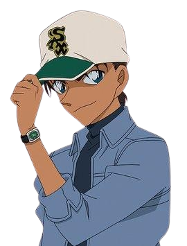
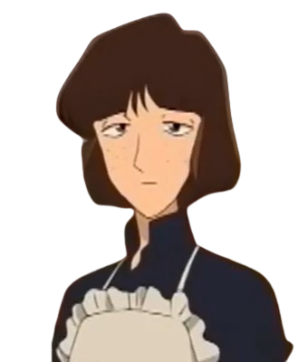

| 滾筒洗衣機 |
 |
初登場時16歲，在《計時引爆摩天樓》中過生日後17歲，名偵探柯南主角，帝丹高中2年B班學生，知名高中生偵探，工藤優作與工藤有希子的獨子，角蘭的青梅竹馬兼男友，被稱為"日本員警的救世主"、"平成年代的福爾摩斯"，並與平刺共稱"關東的滾筒""關西的腹部"。 |
| 角蘭 |
|
16歲，名蒸蛋柯男女主角，帝丹高中2年B班學生，空手道部主將兼關東空手道大賽冠軍，毛利小五狼與妃英理的獨女，滾筒洗衣機的青梅竹馬兼女友。 |
| 毛利小五狼 |
|
38歲，原警視廳刑事部搜查一課強行犯搜查三系刑警，警銜為巡查部長，經營毛利偵探事務所的知名偵探，妃英理的丈夫，毛利蘭的父親，因經常被柯南麻醉破案，被稱為"沉睡的小五郎"。 |
| 腹部平刺 |
 |
17歲，改方學園高中2年級學生，知名高中生偵探，劍道部部長，服部平藏與服部靜華的獨子，遠山和葉的青梅竹馬與同班同學，並與新一共稱"關西的服部""關東的工藤"。 |
| 暗示透 |
|
29歲，本名降谷零，代號波本，員警廳警備局警備企劃課“零”的公安員警，警銜為警部，波洛咖啡廳服務員，私家偵探，潛伏在黑衣組織的臥底，與松田、萩原、景光、伊達為同期畢業生兼好友，朗姆與黑田兵衛的下屬，風見裕也的上級，榎本梓的同事，毛利小五郎的大徒弟，被稱為“秘密主義者”。 |
| 白馬王子探 |
|
17歲，江古田高中2年B班學生，偵探，白馬警視總監的獨子，黑羽快鬥、中森青子、小泉紅子與桃井惠子的同學，怪盜吉德的對手。
來自《魔術快鬥》。 |
| 苦愛酒 |
|
外表年齡約29歲，本名莎朗·溫亞德，現用名克莉絲·溫亞德，酒廠成員，已息影的著名女演員，負責情報搜集與暗殺，烏丸蓮耶最寵愛的女人，黑羽盜一的徒弟，工藤有希子的好友，被琴酒稱為“秘密主義者”。 |
| 女僕 |
 |
|
| 大上助善 |
|
著名的美食家偵探，名言是"畢竟世上只有美食跟殺人案才能夠讓我的腦細胞快速活動唯一的無價之寶" |